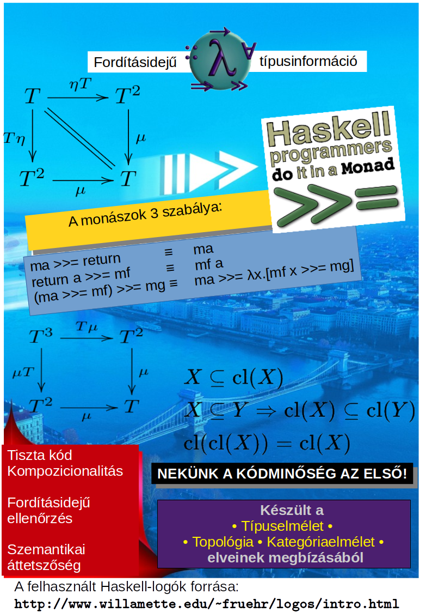

Haskell and mathematics

Haskell and mathematics — and the way I relate to them.
In short: of course I am interested also in mathematics itself for its own sake. To tell the truth, it was originally physics to which I deleveoped an attraction in my childhood. Mathematics and programming came later. Phyics is God's computer, and mathematics is Her programming language using it. Haskell' biggest achievement and main point is to reognize this, and making a way to approach the power of mathematics as near as practically possible. A suspension of short-term practicality seems be a necessary trade-off that can be traded for penetrating deeper into the Platonic realm of deeper ideas. Sometimes also market-based success concept and even common-sense practicality are suspensed at least for a short term. On the long run, even Agda, a language and tool seemingly contrained to the academic realm, can prove to be very useful.
Motivating questions
Now turning to practice, I'd like to mention two interesting questions, that shaped my path of learning during the last year:
- What corresponds to UML in the world of Haskell programming?
- What can be beyond monad transformers? Monad transformers sometimes have a bad reputation: they are not very pure mathematically (functors compose naturally, monads do not), they are sometimes critized also for being mediocre at achieving the goals they are used for: lazy coupling, providing an ideal „glue” for guing different aspects/effects in a modular and untangled way. Monad transformers achieve this goal at a price of compromises and trade-offs. Is there an ideal solution in this field, or are there at least some candidates with less trade-offs?
As for the first question — „some kind of UML for functional programming”: both Quora and Stackoverflow discuss these questions in several threads. A jokeful answer (ocurring several times) is: „Of course also the Haskell world has its UML: it is called »commutative diagrams«!” Similar jokeful answers of the same spirit mention that mathematics itself is the UML of Haskell, and also category theory as a whole is mentioned. Conal Elliot replies with a serious answer mentioning theorem provers/proof assistants like Agda, Coq family, based on intuitionisttic type theories like Matrin-Löf type theory or anything of similar expressive power. So, even the jokeful answers do have a deep truth, moreover, besides intuitionistic Martin-Löf type theory, also seemingly distantly related things like topology can provide deep insights, and not only through its practical motivating examples for category theory, but also on its own way for its own sake. Probably topology is not the only thing that can provide deep insights, and it is a good strategy to keep an open mind towards mathematics as a whole.
As for the second question — what can be beyond the amount of „lazy coupling” provided by monad transformers, without its trade-offs and compromises: my only memory about this question is an old article from Wouter Swierstra „Why attribute grammars matter”. I read and understood it only very superficially, maybe I tried it also on the UUAGC compiler (somewhat more famous at those time than today). Although I forgot even that little that I understood at that time, the essence seems to be that the so-called attribute grammars can provide a rather ultimate level of lazy coupling, with all its advantages, and without the disadvantages of monad transformers. In short: attribute grammars can provide a strong „glue”, even stronger than the higher-oder functions and the lazy evaluation of (Haskell-spirited) functional languages, and this magic „glue” enables a complete separation of aspects and a complete getting rid of tangled code, thus, they can provide the ultimate goal of aspect-orinted programming among functional languages.
In any case, it seems that modern branches of mathematics and its novel achievements can indeed provide a level of lazy coupling that cannot been reached by Haskell alone, and it can be important even for a Haskeller to keep an openness towards mathematics, because even seemingly unrelated (or only distantly related) branches of maths can provide a vision and a leading force for programming.
Mentioning topology
A pity that I have been ignorant towards topology in the past decades! Now I will describe here a short list what attracts me now towards beginning to learning about topology:
- Formal semantics, and more narrowly within that: denotational semantics of lambda calculus (and functional programming languages with lazy evaluation strategy). This approach is based upon topology, and it can model not only successful termination of function calls, but also errors/exceptions, partial functions, recursion, and even infinite runaway errors: in short, the presence vs absence of termination, and also the differences between various evaluation strategies like lazy vs strict evaluation. although I can use lazy evaluation in the not too difficult cases (for example, using lazy IO in simulating interactive behavior, or defining matrix transpose with infinite zips), still, I know only very superficially about the denotation semantics, topological models of lazy constructs . I have only some small achievements in the operational semantics and modelling of lazy evaluation: here, I have my own interpreter program, a lazily-evaluating combinator logic interpreter. I have several versions of such interpeters (most of them implemented in Haskell, and one of them in C). The most recent and clearest implementation of mine for a CL-interpreter is based on the data structures called zippers, i.e., a tree with a moveble „hole”, a node in the focus.
- A bigger motivation for me to learn and relearn topology again: topology provides a key to learn a heavier field, category theory. Topology provides motivating examples for hard concepts of category theory. The main problem in learning category theory directly for a newcomer is not that the therorems and definitons would be so hard, but rather, the steep learning curve of category theory is caused by the fact that it is hard to find good examples that could be me motivationg for a newcomer. A newcomer can feel category theory like „abstract nonsense” without content. Both topology and group theory can play a role of introducing category theory gently, making its learning curve milder: they can fill the theorems of category theory with content, life and motivation. The same can be said about the theory of vector spaces. All these fields of mathematics are more concrete than category theory is, thus they can provide a glue, a content-filler that can crack the seemingly unpenetrable gate of category theory's fortress of abstractness.
- But topology can provide even more than a mere storehouse of motivating examples for category theory. Some theorems and definitons of topology provide an indirect help in understanding concepts of programming (and category theory). They provide aspect and insight, and indirect analogies. Now I will try to demostrate this.
The theorems around the so-called closure operator of topology seem to suggest an analogy with rules of monads of cateogory theory and functional programming. The most intuitive closure operator (that one which is naturally induced in our common-sense 3-D Euclidean space) has the following important proerties. Notating this closure operator c, we can prove that it is a function from sets of points to sets of points) for which also the following proerties hold:
- c is extensive: \(A \subset \text cA\)
- monotone: \(A \subset B \to \text cA \subset \text cB\)
- idempotent: \(\text c(\text cA) \subset \text cA\)

The proof of these theorems is not trivial, but not too difficult either. But if we remain at a superficial level, not ven a proof is necessary: intuition can lead us too, although the ice of relying on mere intuition is very thin and can break at any moment. Poor man's theory of topology is using the „peeled ball” simile/metaphor: „An open set is like a peeled fruit: it has no skin on. A closed set is the original fruit with its skin intact yet. »General« sets can be like a fruit peeled partialy, having its remained skin patches”. A closure operator is like a complete healing of the wounded skin of a partially or completely peeled fruit: growing back its original skin with magic.
Despite of the fragility of this informal intuitive image provided by a simple metaphor, we can use this for demontstrating at leaast the intuitiveness of the above theorems:
- the c closure oparator is indeed extensive [\(A \subset \text cA\)]: „because we can see clearly” that a peeled fruit is surely contained by the original, unpeeled one.
- the c closure oparator is indeed idempontent [\(\text c(\text cA) \subset \text cA\)]: „because we can see clearly” that if a peeled fruit would get back it peel by a sorcerer, then not even this sorcerer could augment the fuit more, because a fruit that has its peel again cannot grow more skin on the already existing skin, so it cannot gain more sking than it already has: there are no more „holes”, „wounds” on it to grow back — the „skin” can only grow back at bald places, at places where there is already a skin no growing process occurs.
- the c closure oparator is indeed monotone [\(A \subset B \to \text cA \subset \text cB\)]: „because we can see clearly” that the subset relation keeps the „skin patch” structure of the fruit, i.e. the structure of where the skin and where the bald parts are.
Of course the intuitive argumentation by the vision of a „peeled fruit” is not a proof, but despite of this fragility compared to formal proofs, intuition at least can help the memorization of these already mentioned three theroem.
Of course the precise formal proof of the above theorems are somewhat more difficult than the informal argumentation above — but not very much more difficult. We need some auxiliary theorems: the so-called neighborhood of a given point can be defined as any open set containing that pont. (This definition differs slightly from the definition occurring in most textbooks and treatments, but it is easier to use, more economical conceptually, and its consequences are the same. A small practice: prove that!)
Under similar considerations, we can also accept a simplified (but equivalent) definition for the notion of closure of a set (Kolmogorov & Fomin: FuncTh-FuncAnal, Def.2.5.1): any \(P\) point belongs to the \(\text c A\) closure of set \(A\), exactly then, iff each neighborhood of \(P\) intersects with the (original) \(A\) set (in other worlds: none of \(P\)'s environments can be disjoint from \(A\)).
We can already prove the first theorem \(A \subset \text cA\) with the above simplified, but correctly formalized treatment. The proof for \(A \subset \text cA\) is: first we prove that \(\forall P \in A\ \bullet P \in \text c A\), i.e. any point belonging to \(A\) belongs to also \(\text cA\). This is easy to see, because each neighborhood of \(P\) contains \(P\) itself (every neighborhood contains the point it is the neighborhood of). And of course \(P\) belongs to \(A\) too (because this was the premise we started from). Thus we can conclude that our theorem is indeed true: each environment of \(P\) has at least one common point with \(A\)-val, because \(P\) itself is an always fit candidate / witness for that.
The other two theorems are somewhat more complex to prove, but their prooves are similar in their concepts to the above one, and not very much more difficult.
A deep analogy
What is the significance of all these in regards of computer programming at all? Functional programming has also three intresting rules that look almost exactly like a formal analogy with the above three theorems. Just let us look at the type signature of the main methods of monads!
return :: Monad m => a -> m a
fmap :: Functor f => (a -> b) -> f a -> f b
join :: Monad m => m (m a) -> m a
To mention concrete intances/implementations/bodies (for the list monad):
return = flip (:) [] -- (: [])
fmap f = foldr ((:) . f) []
join = concat
A fine conceptual distinction remaining implicit
The Haskell sourcecode seems suggesting that there is something special in the case of fmap, (i.e. (in the programming analogon for the rule of monotonity): it is not exactly like the other two. fmap is not directly a method of Monad typeclass, instead, it is originally declared in the Functor typeclass, and Monad must inherit fmap from there:
class Functor f where
fmap :: (a -> b) -> f a -> f b
class Applicative m => Monad m where
return :: a -> m a
join :: m (m a) -> m a

 Although Haskell suggests a fine difference in these concepts, still it suggests also a kind of mere graduality in this distinction:
Although Haskell suggests a fine difference in these concepts, still it suggests also a kind of mere graduality in this distinction: Monad is a descendant from Functor, thus, not being very different in essence, showing up only a rather quantitative but qualitative difference. In contrast, category theory treats the concepts of monads with more explicitness in separating different levels of abstractions: a functor acts between categories, a but a natural transformation acts between functors (thus, making a second-level of abstraction), and a monad is a functor with two natural transformation obeying special laws. Thus, category theory introduces very fine details underlying the less sophisticated and differentiated monad notion in programming. So, a monad is not only a functor, but a functor together with two natural transformations, \(\eta\) and \(\mu\), (their computer counterparts being return and join). In summary: the story behind fmap belongs to a rather different level of abstraction than that return and join. So, the above three theorems the „extension” és „idempontence” and „monotonity” have their roots in rather distinct notions of category theory. (Credit and thans to the author of the figures of the commutative diagrams: Wikipedia — Smimram és Sgnb és Greatfermat)
|
Closure |
Interior |
|
| Extens. / Restrict. |
\(A \subset \text cA\) |
\(\text{int} A \subset A\) |
— standing in a kind of duality |
| Idempotence |
\(\text c(\text cA) \subset \text cA\) |
\(\text{int} A \subset \text{int} (\text{int} A)\) |
— standing in a kind of duality |
| Monotonity |
\(A \subset B \to \text cA \subset \text cB\) |
\(A \subset B \to \text{int} A \subset \text{int} B\) |
— no duality here! |
At first glance, topology does not separate the theorem of monotonity as coceptually separate from the other two other theorems (extension and idempotence). But as Mark Jason Dominus demonstrates in his article „Triples and closure”, there are other topological concepts that already reveal fine underlying distinctions, probably analogous to the functors and natural transformations being on distinct abstraction levels in category theory. The example mentioned in the article: just like as the monad concept is corresponding to the topological closure operator, the same analogy works also for the topological interior operator, whose analogous corresponding concept is the notion of comonads (a concept present both in category theory and programming, just like monads). These concept pairs are related to one another by a duality, reflected also in the formulae corresponding to them: the „directionality” gets switched, except for at the formula corresponding to the functor concept, which is a kind of exception, because it does not switch its „directionality”! This means that the formula corresponding to the functor is not on the same conceptual level as the other two formulae.
The concep of comonads, (originally also coming from category theory, like monads) is present also in functional programming: comonads in Haskell:
class Functor f where
fmap :: (a -> b) -> f a -> f b
class Functor w => Comonad w where
extract :: w a -> a
duplicate :: w (w a) -> w a
As we have seen at monads, Haskell presents Comonads in an inheritance chain from Functors. Deeper conceptual details are suggested only by contrasting the type signature of comonadic extract with monadic return, and comonadic duplicate with monadic join, while fmap (palying role in functor bulding) is not subject to the „reversed writing” (duality). It is category theory which treats deeper details explicitly.
Haskell is implicit also in another thing: most type classes have intended constraints/rules that should hold. A Monoid class instance shoul hold the monoid laws. Monads and functors also have implicit laws that cannot be expressed in Haskell's type system — it is a language with dependents types, for example Agda that can provide such explicitness about all rules/constraints associated with data structures. Haskell has to rely on informal and implicit ways to do that: comments or at most unit tests. Also monads and comonads have contraints that can be expressed only in the documentation of the Haskell libraries. Here presented those for the comonads:
| Control.Comonad |
extend extract = id
extract . extend f = f
extend f . extend g = extend (f . extend g)
|
In summary for all the above things written till now, what I wanted to demostrate: besides categeory theory, also topology can deepen the knowledge about functional programming, moreover, topology not only serves as „handmaiden of category theory” (the modest role of a demonstrator of motivating examples and samples), but topology can provide also directs insights into functional programming on its own, and make fine distinctions in the concept building possible.
Another thing I deduced from all that:
„Tonavigate learn mathematics is necessary”
because there is no substutute for its ability in building insights and vision, and in its power to lead a learning process. Besides that, Haskell is not so strong as mathematics is, but mathematics helps us to accept and appreciate what Haskell can provide, and build it into a path towards stepping further, either into topology, category theory, Martin-Löf type theory, attrubute grammars or any other open topics of the living mathematics.
{kind=link}
{kind=link}